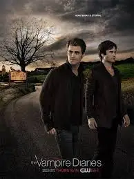

3. Mitos e Lendas: A Profunda Mitologia de "Diários de um Vampiro"
Explore as criaturas sobrenaturais e a rica mitologia por trás de "Diários de um Vampiro".
Descubra como vampiros, lobisomens e bruxas se entrelaçam em uma narrativa
cheia de mistérios e reviravoltas.
O que realmente diferencia "Diários de um Vampiro" de outras séries sobrenaturais
é a sua rica mitologia. Desde o início, a série introduziu uma variedade de criaturas e lendas
que ampliaram o universo de Mystic Falls.
- A série também apresenta conceitos como doppelgängers, seres sobrenaturais
que são cópias idênticas de outras pessoas, e híbridos, uma mistura de vampiro e lobisomem,
como Klaus Mikaelson. Esses elementos adicionam camadas de profundidade e complexidade à narrativa,
mantendo os espectadores constantemente intrigados.
- A série também explora a maldição dos lobisomens, introduzindo personagens
que sofrem com a transformação dolorosa em noites de lua cheia. A interação entre vampiros e lobisomens
é cheia de tensões e alianças temporárias.
- As bruxas desempenham um papel crucial na série, com sua magia influenciando
muitos dos eventos importantes. **Bonnie Bennett* é um exemplo notável, usando seus poderes
para proteger aqueles que ama, mas frequentemente enfrentando
os custos devastadores dessa magia.